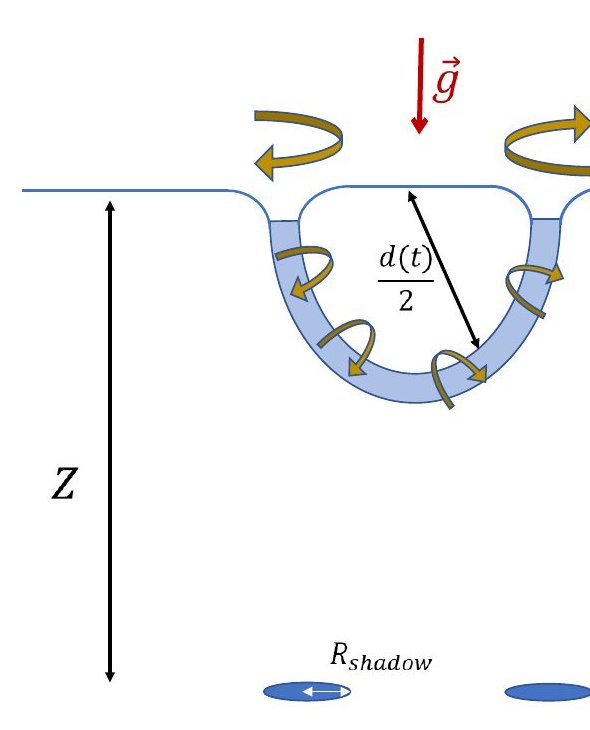
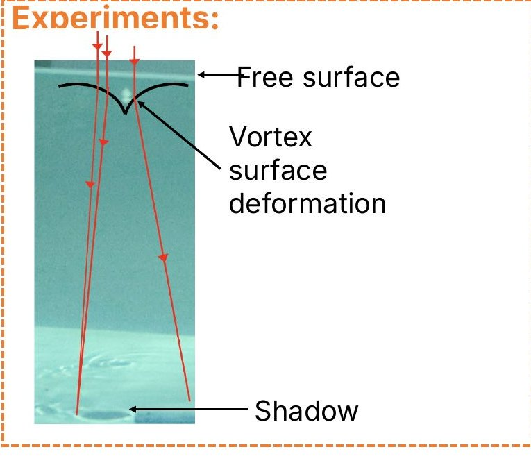
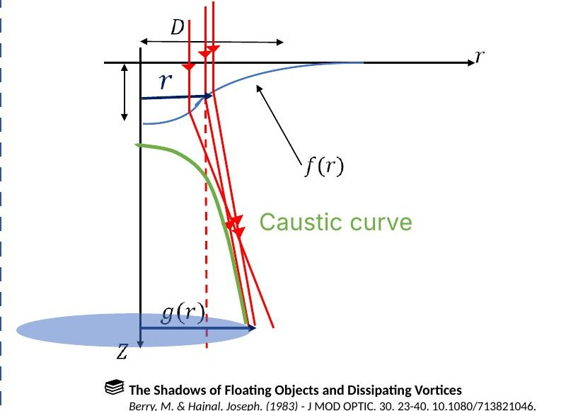
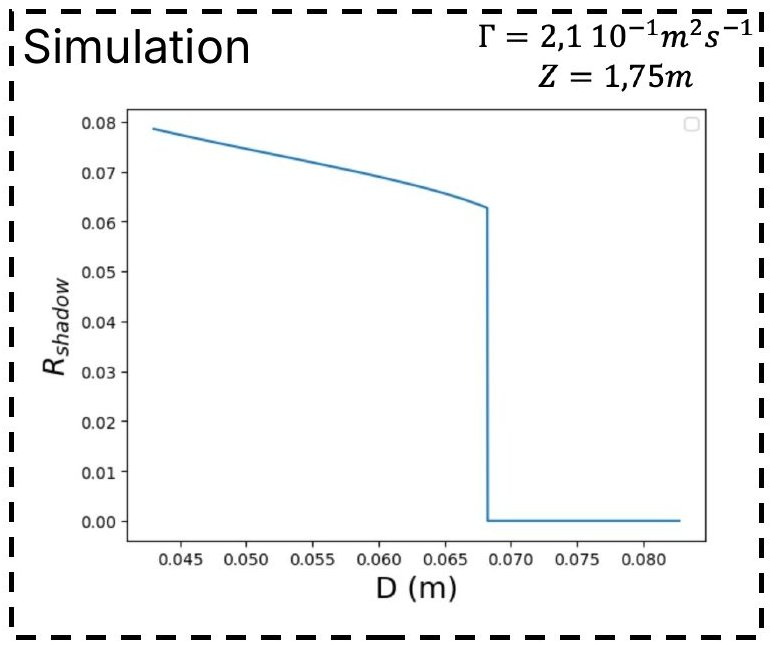
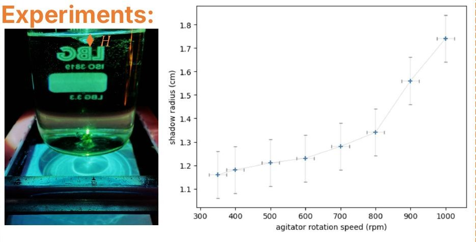
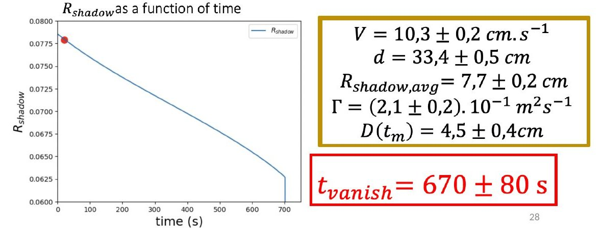

The questionA plate dragged through the surface of still water can produce two black circles on the bottom of the pool. They are the shadows of vortices at the surface. By analyzing a short video of the shadows at some moment, can you predict how long the vortices will last?
Pushing a half-submerged plate through the water leaves behind half of a vortex ring. This is a ring of spinning water, cut in half by the surface. Its two ends meet the surface, and each end is a small whirlpool that dents the surface into a dimple. Light from above passes through the dimples and leaves two dark spots on the floor.
We made these rings in a 1 m³ tank, lit from above by a lamp and a mirror. To build a small copy of a pool, we kept the Froude number (the flow's inertia compared with gravity) equal to that of a pool video, about 0.25. A plate of radius 15 cm moving at 60 cm/s in the pool becomes a plate of radius 1 cm moving at 15 cm/s in the tank. Surface tension only matters for details smaller than about 3 mm, so we could ignore it.
We tracked the shadows frame by frame. After about 2.6 s the ring moves at a constant speed. After about 3 s its diameter also stops changing, at about 1.15 times the diameter of the plate.
How strongly the water spins around each whirlpool is called the circulation. A published relation gives it from the ring's speed and diameter, two things we can read off a video. The spin itself is kept, but viscosity (the water's internal friction) slowly widens the spinning core of each whirlpool. A wider core makes a shallower dimple.

The half ring seen from the side. Each end dents the surface, and each dent casts a shadow on the floor.
Top view of our tank at 2× speed. The two shadows of one ring shrink and vanish.
Inside a dimple the water surface is tilted, so light crossing it is bent (refraction). Around a whirlpool the rays are bent away from the center, and the floor right below receives no light. The bent rays pile up along a curve called a caustic, which makes a bright rim. The edge of the shadow is where this caustic meets the floor.
With a formula from the literature, the circulation and the core size give the shape of the dimple. Following the light rays through it then gives the size of the shadow. This assumes a gently curved surface, which holds in our case, and light coming straight down. In our setup the light was tilted by about 10°.

Side view. Rays (red) crossing the dimple are bent apart, leaving a shadow on the floor.

The bent rays crowd together along the caustic (green). Where it meets the floor sets the shadow's edge.
We simulated this for a pool. As the core widens, the shadow first shrinks slowly. Then, at a certain core size, it disappears all at once.
We checked this in a stirred beaker. Slowing the stirring made the shadow smaller, and at 350 rpm it vanished, while the dip in the surface was still about 9 mm deep (estimated from the stirring speed). A vortex can exist without a shadow. What a video lets us predict is the moment the shadow disappears.

Simulation for a 1.75 m deep pool. Shadow radius against core size. It drops to zero in one step.

The stirred beaker. Faster stirring gives a bigger shadow. Below 350 rpm there is none.
We tried this on a pool video from the YouTube channel Physics Girl ("Crazy pool vortex"). The clip lasts about 6 s, much less than the expected lifetime, so the shadow size barely changes and we used its average. In the video the ring moves at 10.3 cm/s, it is 33.4 cm across, the shadows have a radius of 7.7 cm, and the pool is 1.75 m deep.
Speed and diameter give the circulation. The simulation then finds the core size that makes a 7.7 cm shadow, about 4.5 cm. Letting viscosity widen the core, the shadow vanishes after 670 ± 80 s, about 11 minutes. In our tank the same method predicted 14 ± 4 s, and we measured 11 ± 1 s.
